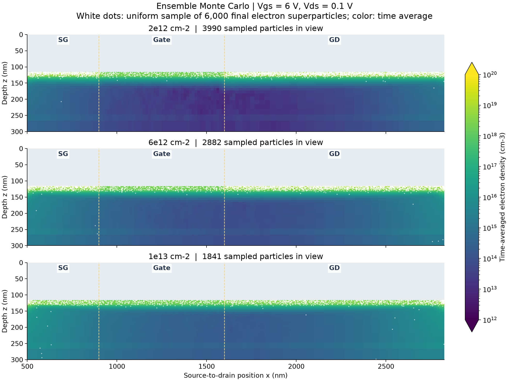
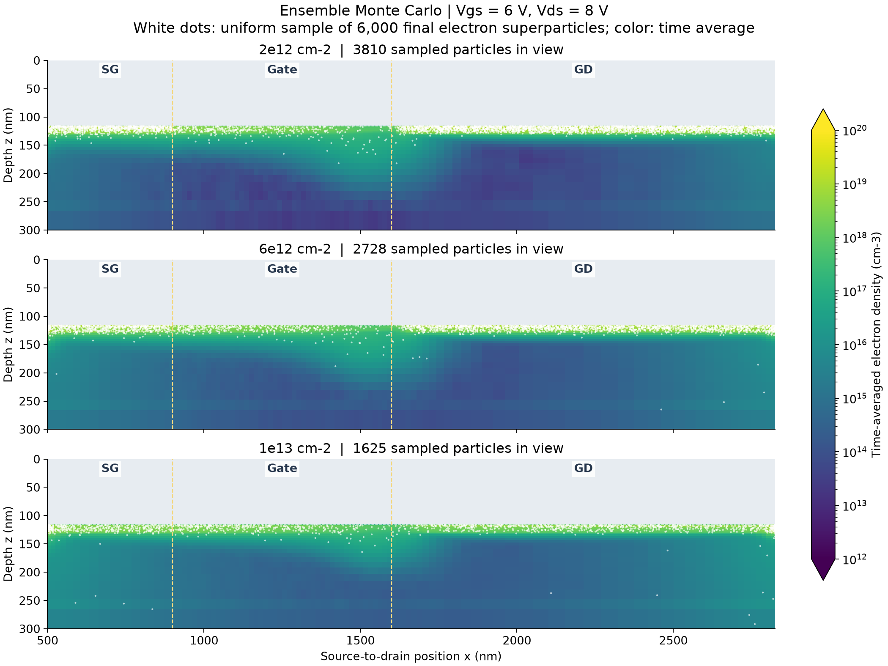
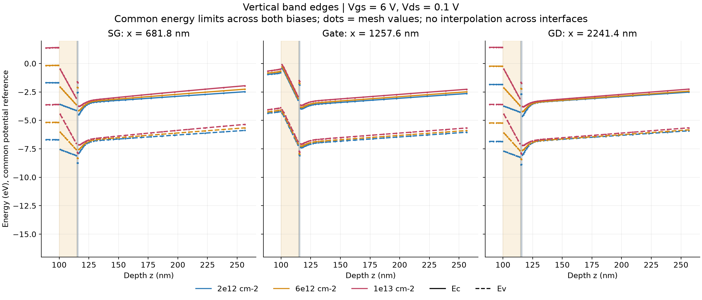
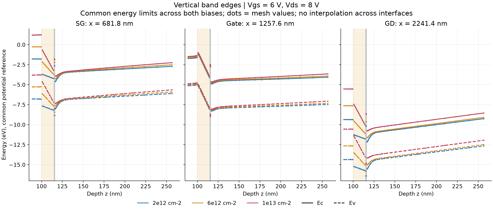
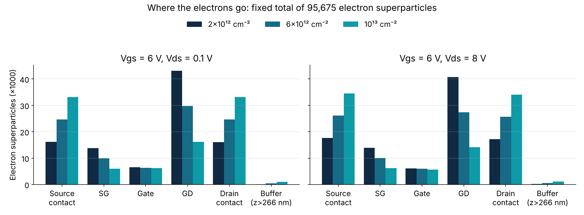
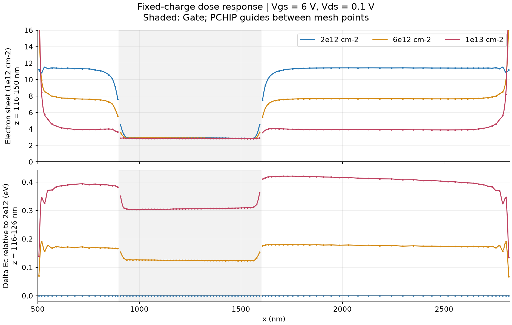
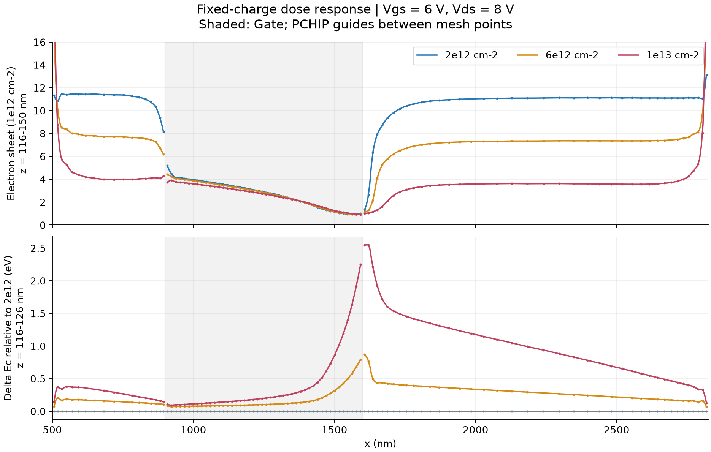

핵심 결과
SG·GD Interface Charge에서 10¹² cm⁻²로 보았던 SG·GD의 SiN/AlGaN 계면 고정 음전하를 2×10¹², 6×10¹², 10¹³ cm⁻²로 키우고, 에너지 밴드·시간 평균 전자 밀도·실제 Monte Carlo 입자 분포·전류를 함께 비교했습니다. 게시 전에 소자물리, 수치해석·통계, 문헌의 세 관점에서 검토를 거쳤고, 그 결과 원래 원고의 해석 일부를 바로잡았습니다.
- 접근 영역 고갈: 전하를 2×10¹²에서 10¹³ cm⁻²로 늘리면(추가 8×10¹² cm⁻²) SG·GD 채널의 전자 면밀도가 약 6–7×10¹² cm⁻² 줄어듭니다. 추가 전하의 78–88%를 2DEG가 받아내는 것으로, 정전기적으로 타당한 크기입니다.
- 8 V 전류: 488.19 → 467.46 → 421.87 mA/mm로, 2×10¹² 대비 4.25%, 13.58% 감소합니다. 같은 온도라면 감소폭은 이보다 클 것으로 예상됩니다.
- 모델 조건의 영향: 이동전자 총량을 고정했기 때문에 SG·GD에서 빠진 전자의 약 98%가 Source·Drain 접촉 아래로 옮겨 갔고, 접촉 아래 면밀도가 약 2배가 되었습니다. 실제 옴 접촉에서는 일어나지 않는 현상입니다.
- 바로잡은 해석: 0.1 V에서 세 영역의 전도대가 약 0.3 eV 함께 오른 것은 소자 전체의 기준 전위 이동이며, 전하가 놓인 SG·GD 고유의 상승은 약 0.07–0.10 eV입니다. 0.1 V의 비단조 전류는 물리 현상으로 해석하지 않습니다.
따라서 이 페이지의 정량값은 “전자 총량을 고정한 모델에서의 전하량 민감도”입니다. 전하 중성 접촉으로 다시 계산하기 전까지 실제 소자의 크기로 일반화하지 않습니다.
계산 조건과 전하량의 의미
| 항목 | 조건 |
|---|---|
| 바이어스 | Vgs = 6 V; Vds = 0.1, 0.25, 0.5, 8 V |
| 입자와 시간 간격 | 전자·정공 superparticle 100,000개(전자 95,675개), 1 fs; 이동입자 총수와 가중치 고정 |
| 영역 | SG x = 500–900 nm, Gate 900–1,600 nm, GD 1,600–2,825 nm |
| 층 구조 | AlGaN(Al 0.20) z = 100–115 nm, AlN 115–116 nm, GaN 채널 116–266 nm; Gate 아래 z < 100 nm는 p-GaN, SG·GD는 SiN |
| 추가 전하 | SG·GD의 z = 100 nm 계면을 나타내도록 AlGaN 쪽 첫 1.5 nm 셀에 균일 배분; 두 영역에 같은 면밀도 |
| 열 모델 | 기판 300 K, 열저항 20 K·mm/W의 일괄(lumped) 자가발열; 소자 온도 = 300 K + Rth·P |
| 평균 | 같은 바이어스에서 세 전하 조건 모두 같은 평균 길이(0.1–0.5 V 480,000 steps, 8 V 160,000 steps); 난수 시드는 한 가지(801) |
같은 면밀도라도 GD(1,225 nm)가 SG(400 nm)보다 길어 총전하량은 같지 않습니다. 기준 조건인 2×10¹² cm⁻²도 추가 전하가 없는 상태가 아닙니다.
전하량의 크기. 2×10¹² cm⁻²는 TCAD 문헌에서 패시베이션 계면 포획을 대표하는 고정 음전하(−2×10¹² cm⁻²) [6]와 같은 수준입니다. Al0.2Ga0.8N/GaN의 분극 전하는 약 1.1×10¹³ cm⁻² [2][3]이고, 2DEG의 전자는 이를 보상하는 표면 상태에서 온다고 봅니다 [1]. 6×10¹²·10¹³ cm⁻²는 이 분극 전하에 근접하는 강한 고갈의 민감도 조건이며 일반적인 공정값이 아닙니다. 실측된 SiN/AlGaN 순 고정전하는 공정에 따라 오히려 양(+1.3–7.1×10¹² cm⁻²)으로도 보고됩니다 [5].
에너지 밴드는 전자가 보는 에너지 지형입니다
전자의 전하는 −q이므로 전위 φ가 만드는 정전기적 위치 에너지는 −qφ입니다. 같은 재료 안에서 전위가 낮아지면 전도대 하단 Ec는 올라가며, ΔEc = −qΔφ입니다(eV와 V로 표시하면 ΔEc[eV] = −Δφ[V]). 재료 상수가 같은 영역에서는 Ec와 Ev가 같은 양만큼 함께 움직입니다. 밴드의 기울기는 전기장을 나타내며(∇Ec = qE), 전자가 받는 힘은 −∇Ec입니다 [9].
그림의 밴드는 코드의 재료 상수와 계산된 전위로 Ec[eV] = −χ − φ[V], Ev = Ec − Eg로 구성했습니다. GaN·AlGaN·AlN의 χ와 Eg가 달라 재료 경계에는 단차가 생기고, 같은 재료 안의 부드러운 휨은 공간적으로 달라지는 전위를 반영합니다. 양자 준위와 준페르미 준위는 포함하지 않았으므로, Ec의 절대 높이를 영역 사이에 비교하지 않고 같은 위치에서 전하 조건 사이의 변화만 비교합니다.
Monte Carlo 전자 구름
Ensemble Monte Carlo는 개별 입자의 자유비행과 확률적 산란을 계산하고, 입자 분포로 전하 밀도를 구성해 Poisson 방정식으로 전위를 갱신하는 과정을 반복합니다 [7]. 그림의 바탕색은 시간 평균 전자 밀도, 흰 점은 마지막 체크포인트의 전자 superparticle에서 비복원 균일 추출한 6,000개 표본입니다. 한 점은 여러 전자를 대표하는 계산 입자이며, 점 크기는 표시용입니다.




전하량이 늘면 SG·GD의 전자 구름이 옅어집니다. 화면 안의 점이 줄어드는 것은 전체 입자 수가 줄어서가 아닙니다. 줄어든 점의 대부분은 화면 밖의 Source·Drain 접촉 아래로 옮겨 갔습니다(빠진 전자의 행방 참고). 표본 수의 비율은 시간 평균 밀도의 비율과 맞지만, 정량 판단은 아래의 시간 평균 값으로 합니다.
접근 영역의 전자 면밀도




아래 표는 GaN 채널 z = 116–150 nm의 전자 밀도를 깊이 적분하고 각 영역 길이로 평균한 면밀도입니다(단위 10¹² cm⁻²).
| Vds | 고정 음전하 (cm⁻²) | SG | Gate | GD |
|---|---|---|---|---|
| 0.1 V | 2×10¹² | 11.012 | 3.001 | 11.279 |
| 0.1 V | 6×10¹² | 7.935 | 2.922 | 7.759 |
| 0.1 V | 10¹³ | 4.796 | 2.845 | 4.216 |
| 8 V | 2×10¹² | 11.105 | 2.730 | 10.653 |
| 8 V | 6×10¹² | 8.041 | 2.673 | 7.131 |
| 8 V | 10¹³ | 4.911 | 2.559 | 3.666 |
0.1 V에서 2×10¹² → 10¹³ cm⁻²로 추가 전하가 8×10¹² cm⁻² 늘 때 SG는 6.2, GD는 7.1×10¹² cm⁻² 줄었습니다. 추가 전하의 78%(SG), 88%(GD)를 바로 아래 2DEG가 받아낸 셈입니다. 1차원 축전기 모델이라면 100%에 가까워야 하며, 나머지는 측면 fringing과 접촉 쪽이 받아냈습니다. 짧은 SG의 비율이 더 낮은 것도 이와 일관됩니다. AlGaN 내부 전위 기울기에 Gauss 법칙을 적용해도 하부 유도 전하가 7.7×10¹² cm⁻²로 추가 전하와 맞습니다.
Gate 아래의 감소(8 V에서 6.3%)는 영역 끝 셀이 섞인 값이며, Gate 내부만 보면 0.1 V에서 약 3%입니다.
SG·GD에서 빠진 전자는 어디로 갔는가
이 계산은 이동전자 총량을 고정합니다. 전체 전자량은 세 조건 모두 3.0977×10¹¹ m⁻¹로 같으므로, SG·GD에서 줄어든 전자는 소자 밖으로 나가지 않고 다른 곳에 쌓여야 합니다.


| Vds | 고정 음전하 (cm⁻²) | Source 접촉 | SG | Gate | GD | Drain 접촉 | Buffer |
|---|---|---|---|---|---|---|---|
| 0.1 V | 2×10¹² | 16,124 | 13,745 | 6,532 | 43,073 | 16,113 | 88 |
| 0.1 V | 6×10¹² | 24,617 | 9,952 | 6,365 | 29,701 | 24,620 | 420 |
| 0.1 V | 10¹³ | 33,125 | 6,041 | 6,206 | 16,153 | 33,137 | 1,013 |
| 8 V | 2×10¹² | 17,615 | 13,875 | 6,080 | 40,753 | 17,176 | 175 |
| 8 V | 6×10¹² | 26,116 | 10,099 | 5,939 | 27,355 | 25,649 | 517 |
| 8 V | 10¹³ | 34,549 | 6,190 | 5,645 | 14,133 | 34,057 | 1,102 |
0.1 V에서 2×10¹² → 10¹³ cm⁻²로 SG·GD에서 약 34,600개가 줄었고, 그중 약 34,000개(98%)가 Source·Drain 접촉 아래로, 약 900개가 buffer로 옮겨 갔습니다. Source 접촉 아래 면밀도는 10.4 → 15.9 → 21.4×10¹² cm⁻²로 두 배가 됩니다. 실제 옴 접촉이라면 이 전자는 외부 회로로 빠져나가야 하지만, 이 모델에서는 접촉이 전자를 저장하는 축전기처럼 동작합니다. 아래의 전위 이동과 저전압 전류에는 이 영향이 포함되어 있습니다.
전도대 변화: 기준 전위 이동과 국소 고갈의 분리


0.1 V에서 z = 116–126 nm 평균 Ec는 2×10¹² → 10¹³ cm⁻²로 SG 약 0.38, Gate 0.31, GD 0.40 eV 올랐습니다. 세 값이 거의 같고, 깊은 buffer(z = 1.5 µm)의 전위도 접촉 아래를 포함해 x 전 구간에서 약 0.2–0.3 V 고르게 내려갑니다. 즉 약 0.3 eV는 소자 전체의 기준 전위 이동이며, 접촉 아래에 쌓인 전자와 관련이 있습니다. Gate 아래에서 Ec가 0.31 eV 올라도 밀도가 약 3%만 줄어드는 것도 이 때문입니다.
Gate를 기준으로 빼면 전하가 놓인 SG·GD 고유의 상승은 약 0.07–0.10 eV입니다. 축퇴 통계로 계산한 국소 (EF − Ec) 변화 약 0.085 eV(채널 상부 밀도 1.4×10¹⁹ → 3.4×10¹⁸ cm⁻³)와 맞으며, 이 값이 국소 전자 밀도 감소와 정량적으로 대응합니다.


8 V, 2×10¹² → 10¹³ cm⁻²에서 영역 평균 Ec 상승은 SG 0.283, Gate 0.414, GD 1.003 eV이며, 국소 최대값은 Gate 드레인 끝 약 2.25 eV, GD 시작점 약 2.55 eV입니다. GD의 큰 상승은 고정 음전하가 Gate 드레인 끝의 공핍 영역을 Drain 쪽으로 넓혀 Drain 전압이 강하되는 위치가 바뀐 결과입니다. x = 1,635 nm의 밀도는 6.3 → 1.2×10¹² cm⁻²로 줄었습니다. 이는 표면 음전하가 접근 영역의 2DEG를 고갈시키는 가상 게이트(virtual gate) [4]가 넓어지는 것과 같은 방향의 변화입니다. 다만 Vetury 등은 동적 포획을 다루었고, 이 계산은 정적인 고정전하입니다.
전하를 1.5 nm 두께에 나눠 놓았기 때문에, 이상적인 면전하와 비교해 약 0.12 V(추가 8×10¹² cm⁻² 기준)의 쌍극자 차이가 있습니다.
전류
국소 전류밀도는 전하량·전자 밀도·평균 속도의 곱이므로, 같은 밀도에서도 속도가 다르면 전류가 달라집니다. 보고 전류는 x = 600–2,725 nm 수송 구간 전자의 속도 합을 시간 평균한 값입니다. 괄호는 블록 SEM으로, 시간 표본의 통계 진단값이며 모델·격자·초기조건을 포함한 전체 불확실성은 아닙니다.
| Vds | 2×10¹² cm⁻² | 6×10¹² cm⁻² | 10¹³ cm⁻² |
|---|---|---|---|
| 0.1 V | 37.00 (0.25) | 39.01 (0.24) | 30.69 (0.15) |
| 0.25 V | 98.34 (0.19) | 93.70 (0.19) | 71.18 (0.20) |
| 0.5 V | 190.78 (0.20) | 176.35 (0.19) | 133.65 (0.16) |
| 8 V | 488.19 (0.23) | 467.46 (0.29) | 421.87 (0.20) |
단위는 mA/mm, Vgs = 6 V입니다. 0.25, 0.5, 8 V에서는 전하량이 늘수록 전류가 줄어듭니다. 8 V 전류는 2×10¹² 대비 4.25%, 13.58% 감소합니다.
0.1 V의 비단조성
0.1 V에서는 6×10¹² 조건(39.01)이 2×10¹² 조건(37.00)보다 높게 나타났습니다. 두 SEM을 합친 기준으로 5.9σ 차이입니다. 그런데 선형 영역 컨덕턴스 I/V를 보면 이상한 쪽은 2×10¹² 조건입니다.
| 고정 음전하 (cm⁻²) | I/V at 0.1 V (mS/mm) | 0.25 V | 0.5 V |
|---|---|---|---|
| 2×10¹² | 370 | 393 | 382 |
| 6×10¹² | 390 | 375 | 353 |
| 10¹³ | 307 | 285 | 267 |
6×10¹²·10¹³ 조건은 Vds가 커질수록 컨덕턴스가 줄어드는데, 2×10¹² 조건만 0.1 V 값이 가장 낮습니다. 이 점을 약 395 mS/mm로 보면 0.1 V 전류는 약 39.5 mA/mm가 되어 단조 감소가 됩니다. 이 조건은 램프 뒤 20,000 steps만 버리고 평균했고, 모든 조건이 한 가지 난수 시드를 썼습니다. 따라서 0.1 V의 비단조성은 물리 현상으로 해석하지 않고, 독립 시드 재계산으로 확인할 대상으로 둡니다.
전류 연속성과 자가발열
GD 구간에서 따로 구한 전류는 보고 전류보다 전하량 순서로 약 0.07, 0.33, 0.80 mA/mm 낮으며, 바이어스와 무관합니다. 10¹³ cm⁻²에서는 이 차이가 블록 SEM보다 큽니다(0.1 V에서 2.6%).
8 V의 소자 온도는 열저항 모델(300 K + Rth·P)로 378.12, 374.80, 367.51 K입니다. 전하량이 클수록 소비전력과 온도가 낮아지므로, 자가발열은 전류 감소를 키운 것이 아니라 일부 상쇄했습니다. 이동도가 T−1.5에 비례한다고 보면 약 4%에 해당하므로, 같은 온도에서의 전기적 감소폭은 13.6%보다 클 것으로 예상됩니다. 일괄 온도 모델이라 국소 발열점 효과는 포함하지 않았습니다 [8].
해석 범위와 다음 계산
| 결과 | 신뢰도 | 근거와 한계 |
|---|---|---|
| SG·GD 2DEG 고갈의 크기 | 높음 | 추가 전하의 78–88%를 2DEG가 받아냄; Gauss 법칙 확인 |
| 8 V에서 GD 공핍 영역의 확장 | 정성적으로 타당 | 가상 게이트와 같은 방향; 정적 고정전하 |
| 8 V 전류 감소율 4.25%, 13.58% | 방향은 타당, 크기는 모델 의존 | 접촉 아래 전자 축적과 자가발열 상쇄 포함 |
| 약 0.3 eV의 공통 Ec 상승, Gate로의 전달 | 모델 조건의 결과 | 전자 총량 고정에 따른 기준 전위 이동 |
| 0.1 V 비단조 전류 | 미확인 | 단일 시드; 2×10¹² 조건의 0.1 V 점이 이상치일 가능성 |
이 계산은 지정한 고정 음전하량에 대한 준정적 Monte Carlo 응답이며, 포획·방출 시간상수나 실제 공정의 전하 생성량은 다루지 않습니다. 전위·밀도 그림은 최종 전류 평균 구간의 저장 블록(각 2,000-step 블록의 후반 1,000 step)을 평균했고, 전자 구름은 최종 체크포인트의 한 시점입니다.
다음 계산에서는 접촉에서 전자가 들어오고 나갈 수 있는 전하 중성 경계로 같은 비교를 다시 하고, 0.1 V 조건을 독립 시드로 반복할 계획입니다. 그때 이 페이지의 전류 감소율과 Ec 이동을 갱신합니다.
참고 문헌과 데이터
[1] J. P. Ibbetson, P. T. Fini, K. D. Ness, S. P. DenBaars, J. S. Speck, U. K. Mishra, “Polarization effects, surface states, and the source of electrons in AlGaN/GaN heterostructure field effect transistors,” Appl. Phys. Lett. 77, 250 (2000). DOI: 10.1063/1.126940
[2] O. Ambacher et al., “Two-dimensional electron gases induced by spontaneous and piezoelectric polarization charges in N- and Ga-face AlGaN/GaN heterostructures,” J. Appl. Phys. 85, 3222 (1999). DOI: 10.1063/1.369664
[3] O. Ambacher et al., “Two dimensional electron gases induced by spontaneous and piezoelectric polarization in undoped and doped AlGaN/GaN heterostructures,” J. Appl. Phys. 87, 334 (2000). DOI: 10.1063/1.371866
[4] R. Vetury, N. Q. Zhang, S. Keller, U. K. Mishra, “The impact of surface states on the DC and RF characteristics of AlGaN/GaN HFETs,” IEEE Trans. Electron Devices 48, 560 (2001). DOI: 10.1109/16.906451
[5] M. Fagerlind et al., “Investigation of the interface between silicon nitride passivations and AlGaN/AlN/GaN heterostructures by C(V) characterization of metal-insulator-semiconductor-heterostructure capacitors,” J. Appl. Phys. 108, 014508 (2010). DOI: 10.1063/1.3428442
[6] E. Catoggio, S. Donati Guerrieri, F. Bonani, “TCAD Modeling of GaN HEMT Output Admittance Dispersion through Trap Rate Equation Green’s Functions,” Electronics 12(11), 2457 (2023). DOI: 10.3390/electronics12112457
[7] C. Jacoboni, L. Reggiani, “The Monte Carlo method for the solution of charge transport in semiconductors with applications to covalent materials,” Rev. Mod. Phys. 55, 645 (1983). DOI: 10.1103/RevModPhys.55.645
[8] B. Padmanabhan, D. Vasileska, S. M. Goodnick, “Is self-heating responsible for the current collapse in GaN HEMTs?,” J. Comput. Electron. 11, 129 (2012). DOI: 10.1007/s10825-012-0385-z
[9] C. Hu, Modern Semiconductor Devices for Integrated Circuits, Pearson (2010), Ch. 2. 저자 공개 원고
[1]–[3]은 분극과 표면 상태의 배경, [4]는 가상 게이트와의 비교, [5]·[6]은 전하량 범위, [7]은 Monte Carlo 방법, [8]은 자가발열, [9]는 밴드 해석에 사용했습니다. 어느 문헌도 이 계산의 수치를 검증한 것은 아닙니다.
데이터. 전압 조건별 전류·SEM·온도 · 영역별 면밀도·전위 · 필드·입자 표본 정보 · 성장 방향 밴드 CSV 18개